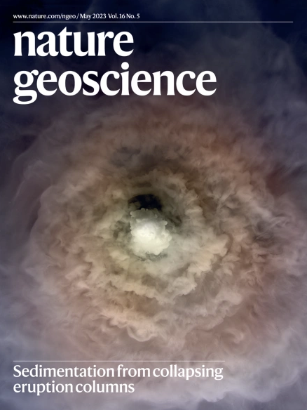
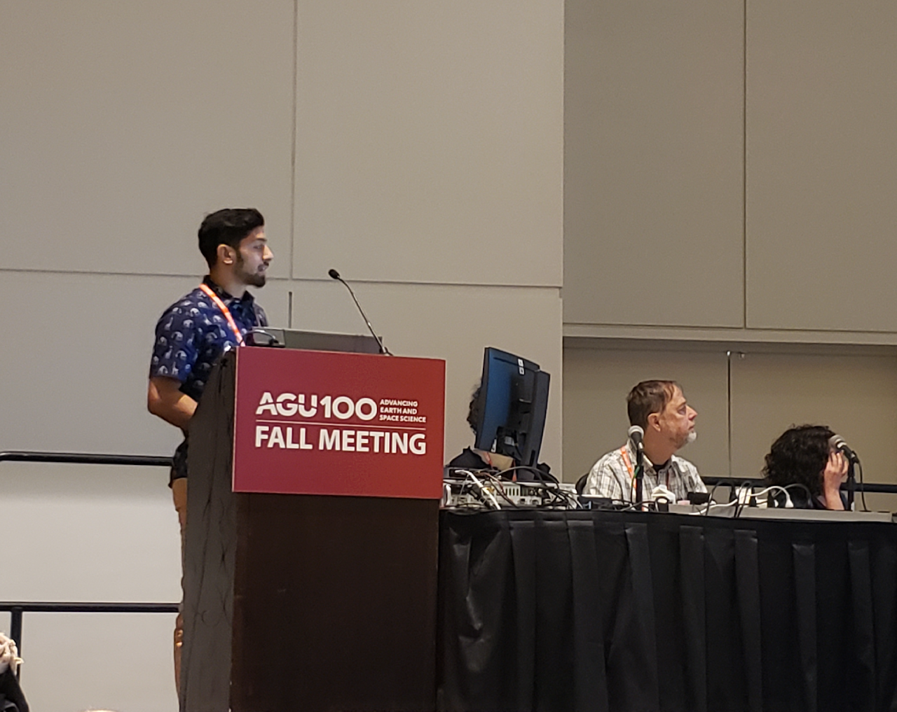

Dr. Johan
Gilchrist
University of Oregon · Dept. Earth Sciences
(he/him/his) · Yoshi
I use field, laboratory, remote-sensing and numerical methods to understand volcanic eruptions, landslides, glaciers, and wildfires. My expertise is in multiphase turbulent flow and explosive eruption dynamics, with growing interests in landslides, wildfire plumes, and methane river flows on Titan.
What would you like to know?
Who I am, what inspires me, and my journey from New Jersey to the mountains of the Pacific Northwest.
Volcanoes, landslides, glaciers, wildfires and planetary science — my publications, methods, and current projects.
Climate advocacy, museum education, and communicating science to the public.
Mountain biking, snowboarding, climbing, and life beyond the lab.
Research Highlight
Submarine Caldera Eruptions & Terraced Deposits
Nature Geoscience · May 2023 · Vol. 16 No. 5
Our research explores how terraced slopes of submarine caldera volcanoes, such as Santorini, Greece, can be used to estimate elusive eruption source conditions. Fountain physics causes caldera-forming eruption columns to collapse periodically as doughnut-shaped sedimentation waves, generating tsunamis, surfing hot rock avalanches, and submarine pyroclastic density currents — helping explain why large eruptions like Hunga Tonga (Jan 2022) can have surprisingly little climate impact.

Contact
Dr. Johan T. Gilchrist (he/him/his)
NSF EAR Postdoctoral Fellow
Dept. Earth Sciences
University of Oregon
Volcanology 206
1255 E 13th Avenue
Eugene, OR 97403
